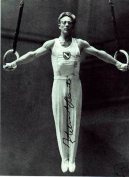

Helmut Bantz (FRG)
1956 Olympic V Gold Medalist

Medal Total
Olympic Games: 1 Gold
World Championships: 2 Silver,
1 Bronze
European Championships:
1 Gold,
1 Bronze
Helmut was born on September 24, 1921, in Speyer. He originally wanted to be a soccer player but his father, the chairman of the Speyer gymnastics association, persuaded Helmut to become a gymnast. Taken prisoner by the British during World War II, Bantz was nonetheless allowed to practice gymnastics and even trained with the British team as they prepared for the 1948 Olympics.
After being released, Bantz returned to Germany and made his Olympic debut at the 1952 Helsinki Olympics. He won medals at the 1954 World Championships and the 1955 European Championships. His greatest success came at the 1956 Melbourne Olympics, where he won a gold medal. Bantz continued in gymnastics and attended the 1960 Rome Olympics -- but this time as a substitute.
After retirint from the sport he worked as a coach. He also taught at the German Sport University in Cologne. Married with two daughters and a son, Bantz suffered from poor health for many years. He died on October 4, 2004 after a long illness.
Competition Results
1952
Olympic Games: 4th Team, 9th AA
1954
International Meet in Paris: 3rd AA
World Championships: 4th Team, 8th AA, 2nd V, 2nd HB, 3rd
PB
1955
European Championships: 3rd AA, 1st PB
FRG Championships: 1st AA
1956
FRG-FIN Dual Meet: 2nd Team, 3rd AA
Olympic Games: 6th AA, 1st V, 6th HB
This page was created on September
12, 2004 and was last updated on October 31, 2024.
© Gymn Forum